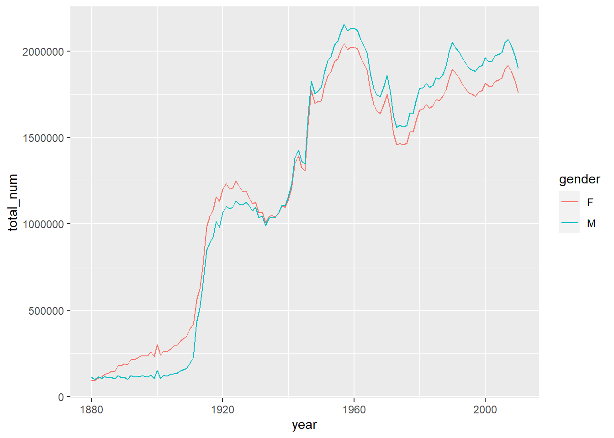
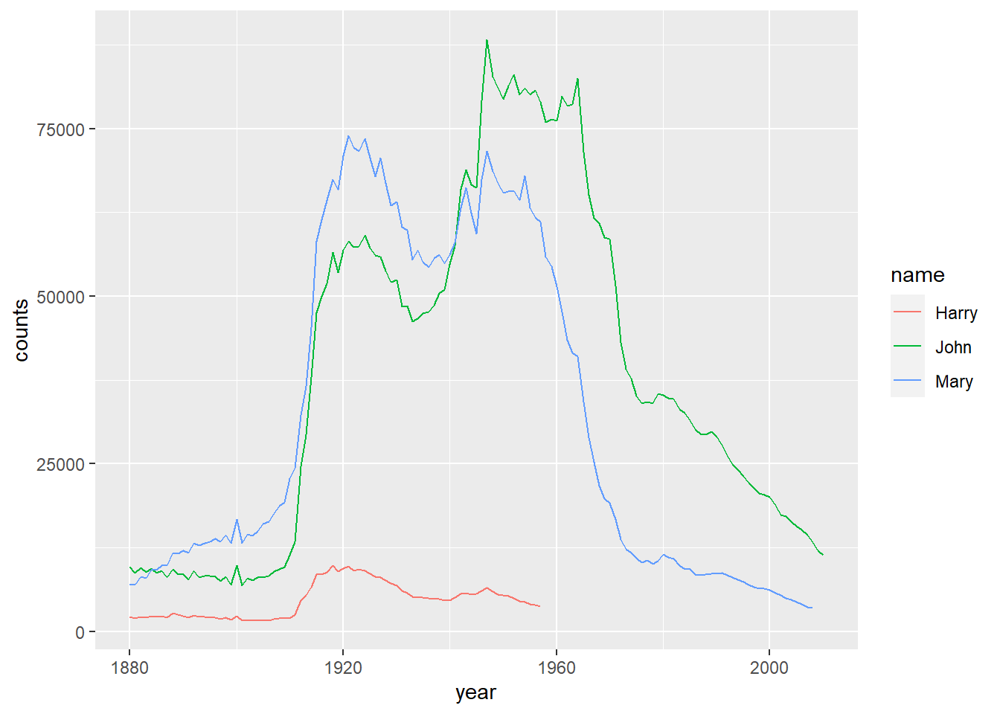
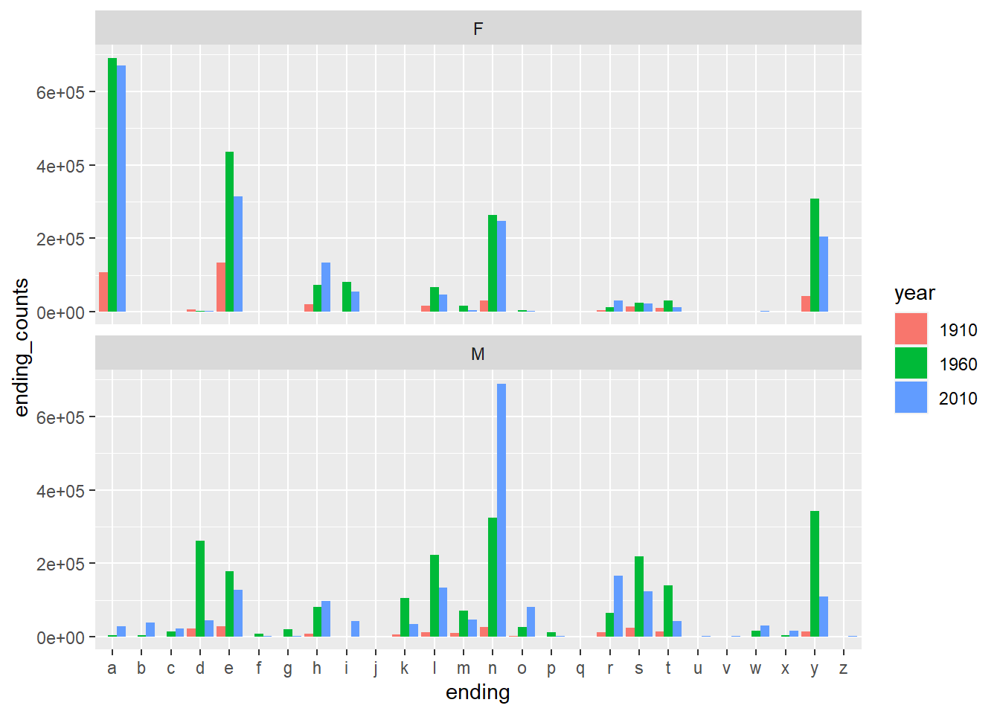
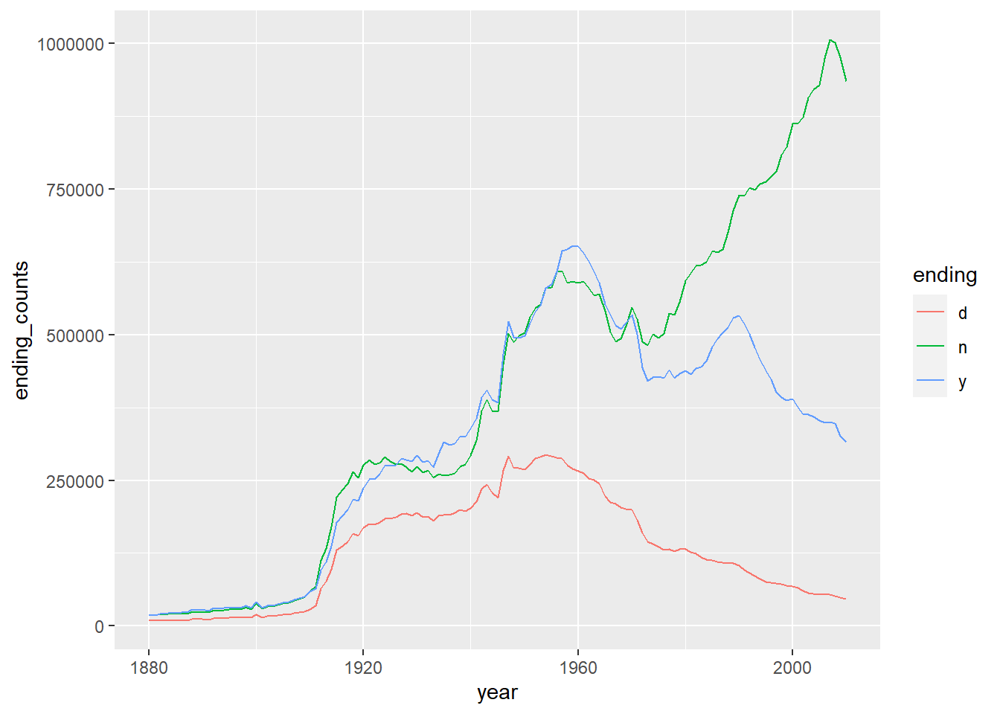

library(tidyverse)
#> Warning: package 'tidyverse' was built under R version 4.1.3
#> Warning: package 'tibble' was built under R version 4.1.3
#> Warning: package 'tidyr' was built under R version 4.1.3
#> Warning: package 'readr' was built under R version 4.1.3
#> Warning: package 'purrr' was built under R version 4.1.3
#> Warning: package 'dplyr' was built under R version 4.1.3
#> Warning: package 'stringr' was built under R version 4.1.3
#> Warning: package 'forcats' was built under R version 4.1.3
#> -- Attaching core tidyverse packages ------------------------ tidyverse 2.0.0 --
#> v dplyr 1.1.1 v readr 2.1.4
#> v forcats 1.0.0 v stringr 1.5.0
#> v ggplot2 3.4.4 v tibble 3.2.1
#> v lubridate 1.9.3 v tidyr 1.3.0
#> v purrr 1.0.1
#> -- Conflicts ------------------------------------------ tidyverse_conflicts() --
#> x dplyr::filter() masks stats::filter()
#> x dplyr::lag() masks stats::lag()
#> i Use the conflicted package (<http://conflicted.r-lib.org/>) to force all conflicts to become errors
who
#> # A tibble: 7,240 x 60
#> country iso2 iso3 year new_sp_m014 new_sp_m1524 new_sp_m2534 new_sp_m3544
#> <chr> <chr> <chr> <dbl> <dbl> <dbl> <dbl> <dbl>
#> 1 Afghani~ AF AFG 1980 NA NA NA NA
#> 2 Afghani~ AF AFG 1981 NA NA NA NA
#> 3 Afghani~ AF AFG 1982 NA NA NA NA
#> 4 Afghani~ AF AFG 1983 NA NA NA NA
#> 5 Afghani~ AF AFG 1984 NA NA NA NA
#> 6 Afghani~ AF AFG 1985 NA NA NA NA
#> 7 Afghani~ AF AFG 1986 NA NA NA NA
#> 8 Afghani~ AF AFG 1987 NA NA NA NA
#> 9 Afghani~ AF AFG 1988 NA NA NA NA
#> 10 Afghani~ AF AFG 1989 NA NA NA NA
#> # i 7,230 more rows
#> # i 52 more variables: new_sp_m4554 <dbl>, new_sp_m5564 <dbl>,
#> # new_sp_m65 <dbl>, new_sp_f014 <dbl>, new_sp_f1524 <dbl>,
#> # new_sp_f2534 <dbl>, new_sp_f3544 <dbl>, new_sp_f4554 <dbl>,
#> # new_sp_f5564 <dbl>, new_sp_f65 <dbl>, new_sn_m014 <dbl>,
#> # new_sn_m1524 <dbl>, new_sn_m2534 <dbl>, new_sn_m3544 <dbl>,
#> # new_sn_m4554 <dbl>, new_sn_m5564 <dbl>, new_sn_m65 <dbl>, ...3 Projects with R
3.1 WHO TB dataset
Let us explore the tuberculosis cases data. The dataset is provided by WHO and can be downloaded from here. tidyr also provides the dataset. You may directly get the dataset after you load tidyr from tidyverse. The variable description can be found from tidyr documentations.
Based on the description of varaibles, we understand that
country,iso2,iso3are all refered to country names (and thus they are redundant).- Columns after
year, likenew_sp_m014etc., are counts of new TB cases recorded by groups. The code has three parts, most of which are separated by_(but there are some exceptions).- The first part is always
new. - The second part is a code for method of diagnosis:
rel= relapse,sn= negative pulmonary smear,sp= positive pulmonary smear,ep= extrapulmonary.
- The third part is a code for gender (
f= female,m= male) and a code for age group:014= 0-14 yrs of age,1524= 15-24 years of age,2534= 25 to 34 years of age,3544= 35 to 44 years of age,4554= 45 to 54 years of age,5564= 55 to 64 years of age,65= 65 years of age or older
- The first part is always
Therefore to clean the data, we need the following steps.
Example 3.1 Gather together all the columns from new_sp_m014 to newrel_f65.
Tip
wholonger <- who %>% pivot_longer(cols=5:60, names_to='group', values_to='counts')Then we use stringr::str_replace() to replace newrel by new_rel.
wholonger2 <- wholonger %>% mutate(key=str_replace(group, 'newrel', 'new_rel'))Example 3.2 Parse the column group into columns.
Tip
wholonger3 <- wholonger2 %>%
separate(key, into=c('new', 'type', 'genderage'), sep='_') %>%
separate(genderage, into=c('gender', 'age'), sep=1)Example 3.3 Pick the columns that matters.
Tip
tidywho <- wholonger3[c('country', 'year', 'type', 'gender', 'age', 'counts')]We could use the pipe symbol to connect all the above steps.
Tip
tidywho <- who %>%
pivot_longer(cols=5:60, names_to='group', values_to='counts') %>%
mutate(key=str_replace(group, 'newrel', 'new_rel')) %>%
separate(key, into=c('new', 'type', 'genderage'), sep='_') %>%
separate(genderage, into=c('gender', 'age'), sep=1) %>%
select('country', 'year', 'type', 'gender', 'age', 'counts')3.2 US Babynames
Let us use R to solve the babynames dataset again.
The first task is to read those files.
Example 3.4 Please read files and put the data into one tibble. The dataset can be downloaded from here as a zip file.
Tip
path <- 'assessts/datasets/babynames/yob'
dfs <- map(1880:2010, function(y){
filepath <- paste0(path, as.character(y), '.txt')
df_individual <- tibble(read.csv(filepath, header=FALSE))
names(df_individual) <- c('name', 'gender', 'counts')
df_individual$year <- y
df_individual
})
df <- bind_rows(dfs)Example 3.5 Please plot the total births by gender and year.
Tip
df %>%
group_by(gender, year) %>%
summarize(total_num=sum(counts)) %>%
ggplot() +
geom_line(mapping = aes(x=year, y=total_num, color=gender))
#> `summarise()` has grouped output by 'gender'. You can override using the
#> `.groups` argument.
Example 3.6 Please compute the proportions of each name relateive to the total number of births per year per gender.
Tip
df %>%
group_by(gender, year) %>%
mutate(prop=counts/sum(counts))
#> # A tibble: 1,690,784 x 5
#> # Groups: gender, year [262]
#> name gender counts year prop
#> <chr> <chr> <int> <int> <dbl>
#> 1 Mary F 7065 1880 0.0776
#> 2 Anna F 2604 1880 0.0286
#> 3 Emma F 2003 1880 0.0220
#> 4 Elizabeth F 1939 1880 0.0213
#> 5 Minnie F 1746 1880 0.0192
#> 6 Margaret F 1578 1880 0.0173
#> 7 Ida F 1472 1880 0.0162
#> 8 Alice F 1414 1880 0.0155
#> 9 Bertha F 1320 1880 0.0145
#> 10 Sarah F 1288 1880 0.0142
#> # i 1,690,774 more rowsExample 3.7 We would like to keep the first 100 names (by counts) in each year and save it as a new tibble top100.
Tip
top100 <- df %>%
group_by(gender, year) %>%
top_n(100, wt=counts)Example 3.8 Please draw the trend of John, Harry, Mary in top100 by counts.
Tip
namelist <- c('John', 'Harry', 'Mary')
top100 %>%
filter(name %in% namelist) %>%
ggplot() +
geom_line(mapping=aes(x=year, y=counts, color=name))
Example 3.9 Now we would like to analyze the ending of names. Please get a tibble that contains the counts of ending letter per year per gender. We mainly focus on 1910, 1960 and 2010.
Tip
df %>%
filter(year %in% c(1910, 1960, 2010)) %>%
mutate(ending=str_sub(name, -1, -1),
year=as.factor(year)) %>%
group_by(gender, year, ending) %>%
summarise(ending_counts=sum(counts)) %>%
ggplot() +
geom_col(
mapping = aes(
x=ending,
y=ending_counts,
fill=year,
),
position = "dodge",
) +
facet_wrap(~gender, nrow=2)
Example 3.10 Please draw the line plot to show the trending of certain letters through years. Here we choose d, n and y.
Tip
df %>%
mutate(ending=str_sub(name, -1, -1)) %>%
group_by(year, ending) %>%
summarise(ending_counts=sum(counts)) %>%
filter(ending %in% c('d', 'n', 'y')) %>%
ggplot() +
geom_line(
mapping = aes(
x=year,
y=ending_counts,
color=ending
)
)